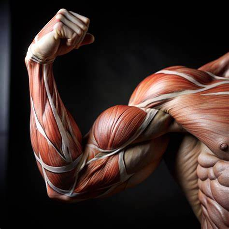

¿Qué son los músculos?

Los músculos son tejidos blandos que tienen la capacidad de contraerse y relajarse, permitiendo el movimiento del cuerpo. Están formados por células especializadas llamadas fibras musculares. Los músculos no solo facilitan el movimiento, sino que también ayudan a mantener la postura y producen calor corporal. Son esenciales para funciones vitales como respirar, hablar y digerir los alimentos.